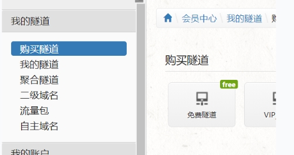
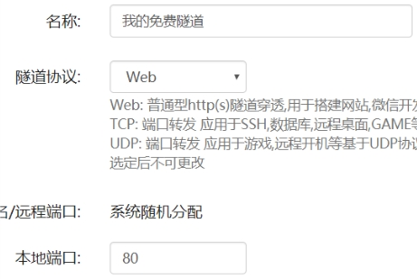
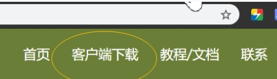
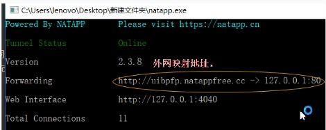
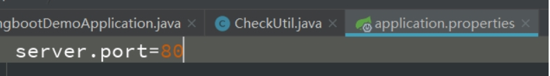
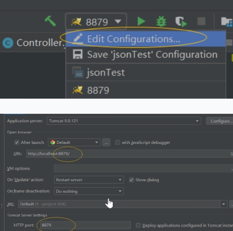
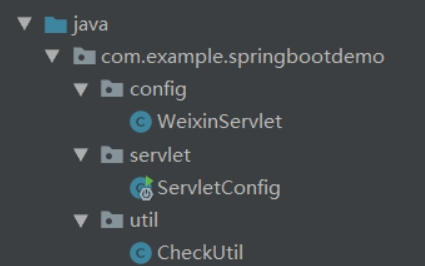
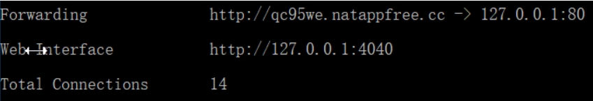
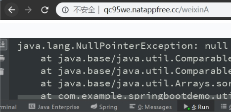
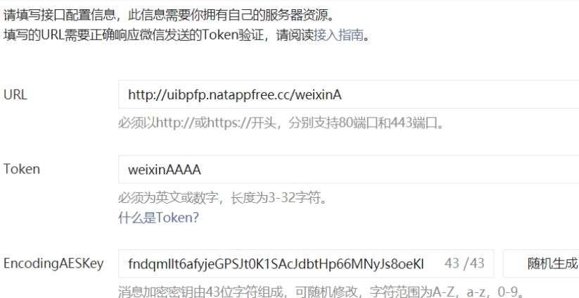

开发环境下，要想与微信后台对接，需要在公网上访问本机服务器 URL 地址(只能使用 80 端口 / 443 端口)。因此，需要用映射工具将本机地址映射到公网上。
1.使用NATAPP
①购买隧道
- 地址：https://natapp.cn/
- 注册之后 点击
登录然后购买隧道
| 注意：免费隧道在每次启动窗口时都会更换映射地址。

- 填写 80 端口 / 443 端口(微信仅支持这两个端口号)

- 然后进入刚刚购买的隧道 记住你的
authtoken
②映射
- 下载客户端

- 新建一个
config.ini文件 内容如下
| 将authtoken字段的值修改为刚刚购买的隧道的authtoken。
1 | #将本文件放置于natapp同级目录,程序将读取[default]段。 |
- 将客户端程序和
config.ini文件放入同一个文件夹中 - 启动命令行 进入该文件夹 输入
natapp -authtoken=你的authtoken即可得到如下结果

再注意！！对于免费隧道来说，每次启动
natapp.exe进行映射时，其外网映射地址都会改变。
③映射测试
- 将工程的
Tomcat端口号改为 80 端口或 443 端口(对应隧道的端口号)
| 在 Spring Boot 工程中，按照以下方式修改：

| 其他工程的修改方式：

若此时访问
127.0.0.1:80(或localhost:80)和访问映射外网:80是同一个效果，说明映射成功！
2.微信开发者模式接入
①填写服务器配置
- 服务器地址
URL：所映射的外网地址/工程校验代码的访问地址。
| 如： http://qc95we.natappfree.cc/weixinA。 - Token：开发者随意填写 在接入认证时生成一个签名。
| 需要在校验代码中定义一个字符串名为 Token，此字符串值对应所填写内容，具体看下文。
②验证服务器地址的有效性
- 开发者提交信息后，微信服务器会发送 GET 请求到填写的服务器地址 URL 上，GET 请求携带以下四个参数。
signature 微信加密签名 timestamp 时间戳 nonce 随机数 echostr 随机字符串 - 需要开发者将 token、timestamp、nonce 这三个参数进行排序，再拼接成字符串并对其进行 sha1 加密，再将加密后的字符串与微信加密签名( signature )进行对比，两个字符串相同时(可标识该 GET 请求来自微信服务器)返回 echostr 参数内容，此时开发者接入成功。
③具体代码
我在 Spring Boot 工程中配置了 Servlet 校验代码。如果你不想在 Spring Boot 工程中测试，可以在其他 web 应用的
web.xml文件中自行配置 Servlet。只是配置文件不同，校验代码都相同。
- 工程目录结构如下：

- 附上我的代码
1 | package com.example.springbootdemo.config; |
④映射调试
- 此时可通过
映射地址/wenxinA 或 localhost:80/weixinA访问这个 Servlet
| 注意：因为访问此校验代码需要传入四个参数，所以如下直接访问时，控制台报出的空指针异常，不是配置的问题！！


- 将可以访问 Servlet 的 URL 配置到微信公共平台的服务器 URL 一栏
- 最后再填写
Token对应的值
| 我的校验代码中，Token字符串的值为 wenxinAAAA。

附录
- 我的个人博客：messi1002.top
- 如有错误或疑惑之处 请联系 wjymessi@163.com